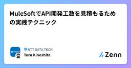
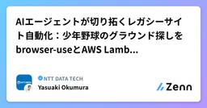
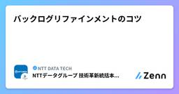
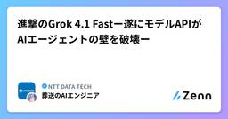

NTT DATA TECHのフィード
https://zenn.dev/p/nttdata_tech
NTT DATA公式アカウントです。 技術を愛するNTT DATAの技術者が、気軽に楽しく発信していきます。 当社のサービスなどについてのお問い合わせは、 お問い合わせフォーム https://nttdata.com/jp/ja/contact-us/ へお願いします。
フィード

MuleSoftでAPI開発工数を見積もるための実践テクニック
NTT DATA TECHのフィード
MuleSoftでAPI開発工数を見積もるための実践テクニックMuleSoftは、様々なシステム間連携をハブ＆スポーク型でつなぎ合わせるiPaaS（Integration Platform as a Service）製品です。MuleSoftは単純にAPIリクエストをルーティングするだけでなく、ローコードでAPIアプリケーションを開発することが可能で、より柔軟で要件にあったシステム間連携を実現することができます。一方、ローコード開発が発生することから、導入初期の段階で「APIのローコード開発の工数をどう見積もればよいか？」と悩む方も少なくありません。本記事では、MuleSof...
3日前

AIエージェントが切り拓くレガシーサイト自動化：少年野球のグラウンド探しをbrowser-useとAWS Lambdaで解決する
NTT DATA TECHのフィード
はじめにNTTデータの奥村です。昨今、様々な生成AIエージェントに関する取り組みが公開されています。今回は、その中でもブラウザ操作に特化したAIエージェントに関する取り組みの紹介をします。 取り組みの背景私は都内でとある少年野球チームの運営に携わっており、特に練習用グラウンドの確保に頭を悩ませています。都内のグラウンド探しは、主に以下のような課題を抱えています。競争率の高さ: 野球ができる場所が限定的なのに対し、チーム数が多く、毎週末の確保が難しい。システムの旧態依然さ: 多くの公共施設予約システムがレガシーな作りで、非常に使いにくい。自動化の壁:空き通知機...
4日前

バックログリファインメントのコツ 1
1
NTT DATA TECHのフィード
はじめにバックログリファインメント（以下、リファインメント）は、スクラムチームが「次に何をつくるか」を明確にするための継続的な活動です。うまく回れば、スプリントプランニングで迷わず、チームが自信を持ってスプリントを開始できます。一方で、次のような悩みもよく聞かれます。バックログが膨張し、古い項目が放置されたまま優先度が曖昧議論が詳細設計の検討会になり、時間ばかりかかって前に進まない「APIだけ」「DBだけ」の分割で、価値の検査ができないまま終わる本エントリーでは、こうした悩みを解決し、次のスプリントプランニングで迷わない状態をつくるためのコツを紹介します。 リファ...
4日前

進撃のGrok 4.1 Fastー遂にモデルAPIがAIエージェントの壁を破壊ー
NTT DATA TECHのフィード
Grok 4.1 Fastでは大幅なエージェント能力の向上とともに、Agent Tools APIにより、function callingやMCPサーバーを利用せずとも、Web検索やXの検索、文書検索、コード実行などができるようになってきています。本稿では、Grok 4.1 FastのAgent Tools APIについて試していきます。※ Grok 4.1 Fastは、OpenRouterで11月中は無償で利用できます。 進撃のGrok 4.1 Fast脅威の性能を持つGemini 3.0 Proに沸き立つ中、xAIの最新モデルGrok 4.1 Fastが登場しました。通信業...
6日前

Amazon Bedrock AgentCore Observabilityを支えるADOTの実装に迫る
NTT DATA TECHのフィード
🧭 はじめに2025年10月にGAとなったAmazon Bedrock AgentCoreにおける「AgentCore Observability」とは、生成AIエージェントの内部動作をOpenTelemetry（OTel）ベースで観測できる仕組みです。リクエスト処理時間やエラー率だけでなく、「どんなプロンプトが送られ」「どんな応答が返ったのか」といったLLM固有の情報まで観測することが特徴です。しかし、この観測の裏側では、従来までのOTelベースのトレースでは扱えない課題が存在しました。プロンプトや応答は巨大なテキストであり、スパンが肥大化する機密情報を含む可能性があり...
9日前
バッチ処理にAWSのECS/Lambdaを採用するときに注意すること 4選
NTT DATA TECHのフィード
はじめに：バッチ処理とクラウド（CaaS/FaaS）本記事のバッチ処理は、HPC（High Performance Computing）の文脈のバッチ処理ではなく、いわゆる業務バッチ処理を意図しています。バッチ処理には以下のようなデメリットがあるため、削減した方が望ましいケースも多いと思います。ワークフローが複雑化し、メンテナンスが難しくなったり、障害復旧に時間がかかる。処理の集中によって性能問題が発生する場合がある。顧客体験のため24時間稼働を求められるシステムも増えており、リアルタイム処理との共存が難しい。とはいえ、やはりバッチ処理は避けられないものです。例えば、...
9日前
GitHub Universe 2025 参加レポート
NTT DATA TECHのフィード
はじめに2025年10月28日～29日に、米国サンフランシスコにて開催された「GitHub Universe 2025」に参加してきました。会場はサンフランシスコのベイエリア、フィッシャーマンズワーフの近くにあるFort Mason Centerです。幸いなことに2日間とも好天に恵まれ、会場からゴールデンゲートブリッジも綺麗に見ることが出来ました。会場の様子。奥に見えているのはゴールデンゲートブリッジ。会場入り口（開催前日）前日の午後から受付が行われていたため、現地到着後に受付を済ませました。このときはほとんど人がおらず、スムーズに受付が完了したのですが、当日の朝は...
10日前
【APIでも画像は取れる！】OpenAI Agents SDKのCode Interpreterでグラフ画像生成【文字化けも防げる！】
NTT DATA TECHのフィード
はじめにこんにちは！NTTデータの@kouiwaです。皆さんはOpenAI Agents SDKのCode Interpreterをご存じですか？入力したPythonコードをサンドボックス環境で実行し、データ処理やグラフ描画まで行ってくれる、データ分析において革命的な力を秘めたツールです。この記事では、OpenAI Agents SDKのCode Interpreterを用いて文字化けのないグラフ画像を生成し、取得する方法を解説します。同様にAIエージェント開発に挑戦するエンジニアの方々にとって、少しでも参考になれば幸いです。 想定読者OpenAI Agents SDK...
10日前
日本語タスクにおける text-embedding-3-small と text-embedding-3-large の性能比較
NTT DATA TECHのフィード
0. はじめにはじめまして、株式会社NTTデータグループの技術革新統括本部品質保証部の秋山信と申します。今回は仕事上でRAG導入をする際に検討したOpenAIの埋め込みモデルについてよりモデルそのものに着目をして深く比較をしたので以下の記事としてまとめようと思います。今後OpenAIで埋め込みモデルを使用する人の少しでも役に立てば幸いです。 1. 導入例えばRAG（Retrieval-Augmented Generation）システムを構築する際、文書検索の基盤となる「埋め込みモデル」を選定する必要があります。OpenAIの text-embedding-3-small...
10日前
社会人1年目が語る、“セキュリティイベント沼”のすゝめ
NTT DATA TECHのフィード
はじめに25卒でNTTデータグループに入社し、NTTDATA-CERTに配属された廣瀬です。学生時代から現在までセキュリティをはじめとしたIT系のイベントに積極的に参加しています。最近、「どのようなイベントに参加すればよいか」と質問を受けることが増えました。そこで本記事では、イベントに参加する意味、イベントの探し方、実際に参加して良かったセキュリティイベントを紹介します。 想定読者外部の勉強会等に参加したいが、一歩踏み出せない人セキュリティに興味があるが、何をしたらいいかわからない学生※上記以外の方もぜひご覧ください！ 私が考えるイベントに参加する意味イベ...
11日前
Amazon Q in Connect＆step-by-stepガイド：コールセンターでのインタラクティブな生成AI検索対象の絞り込み
NTT DATA TECHのフィード
Amazon Q in ConnectとはAmazon Web Services（AWS）のクラウドコンタクトセンターサービスであるAmazon Connectには、同AWSの生成AIアシスタントサービスである、Amazon Qを簡単に統合することができます。Amazon Qを統合することで、以下のような、AIによるコンタクトセンターの高度化、対応の効率化が可能です。手動検索：エージェント（オペレータ）が手動でナレッジを検索セルフサービス：生成AIエージェントが、直接問い合わせ元（顧客）と会話し、エージェント（オペレータ）を介さずに問題の切り分けや顧客課題解決を自律的に行う...
11日前
MEKIKI — 未来を読み解く、AI技術の最前線
NTT DATA TECHのフィード
はじめにAIの進化は、もはや日々のニュースの一部となっています。新たな生成モデル、対話エージェント、マルチモーダル技術、そしてそれらを支えるインフラや倫理議論——。一度キャッチアップしたと思っても、翌日には新たなアップデートが現れ、私たちの常識を更新していきます。そんな目まぐるしい変化の中で、「本質を見極める目」 を持ち、AIの波を読み解こうとする取り組みが生まれました。それが 「MEKIKI」 です。 MEKIKIとはMEKIKI は、NTTデータおよびNTTデータグループの社員有志による社内横断プロジェクト。AIエージェントを中心としたAI技術や製品、ニュースに...
13日前
明日から活用できる JSONata版 Step Functions 入門
NTT DATA TECHのフィード
JSONata版のStep Functionsについて2024/11にStep FunctionsはこれまでのAmazon States Languageだけでなく、JSONataという言語を利用できるようになりました。該当のAWS公式アップデート情報JSONataは、JSON形式のデータを動的に変換・抽出・加工するための軽量なクエリ言語です。既に１年ほど経過はしていますが、既存のASL資産があるなどの理由でまだJSONataでのStep Functionsを書いたことが無い、利用できていないという方もいるかと思います。そこで本記事ではJSONataでStep Functio...
17日前
AWS Landing Zone Accelerator ソースコードを歩く
NTT DATA TECHのフィード
AWS Landing Zone AcceleratorとはAWS Landing Zone Accelerator（LZA）とは、Amazon Web Services（AWS）の提供しているソリューションの１つです。AWSの"ソリューション"のため、AWSサポートも（Developer,Business,Enterprise相当であれば）利用できます。LZAでは、YAMLの設定ファイル群を元に、マルチアカウントの"共通基盤"（Landing Zone）を作成する、IaCパイプライン（Core Pipeline）が提供されます。また、そのIaCパイプライン自体を更新するための管...
17日前
初心者向けアジャイル講座～デイリースクラム～
NTT DATA TECHのフィード
はじめにスクラム開発では、チームの活動を円滑に進めるために、いくつかのイベントが定期的に行われます。その中でも「デイリースクラム」は、開発チームが毎日実施する重要なイベントのひとつです。本記事では、デイリースクラムの概要・基本ルール・進め方を初心者向けにわかりやすく解説します。スクラムを学び始めた方が、デイリースクラムの本来の意図を理解し、チームの運営に活かすきっかけになれば幸いです。 デイリースクラムとはデイリースクラムは、スプリントの進行状況を確認し、チームとして計画を最適化するための時間です。チーム全員が現在の状況を共有し、スプリントゴールに向けてどのように進め...
18日前
新人が徹底解説！Agent Bricks カスタムLLM の"使いこなし方"
NTT DATA TECHのフィード
はじめにこんにちは、Databricksビジネス推進室の澁谷です。2025年6月にサンフランシスコで開催されたDatabricksの年次カンファレンス「Data + AI Summit 2025」にてAIエージェント構築ツール「Agent Bricks」が発表されました。2025年10月現在、Agent Bricksは限定されたリージョンでのベータ版提供となっており、該当の環境を触れるユーザーが先行して利用できます。https://www.databricks.com/jp/blog/introducing-agent-brickshttps://docs.databric...
20日前
知られざるAWSネットワークの味方、Reachability Analyzerの紹介
NTT DATA TECHのフィード
はじめにAmazon Web Services（AWS）のネットワーク構築をしていると、「なぜか通信が通らない...」という状況に遭遇することが意外と多いです。早く検証進めたいのに、ネットワーク設定でハマってしまい、原因調査に１時間かかってしまう。このような、経験をした方も多いのではないでしょうか。この時に頼りになるのがReachability Analyzerです。Reachability Analyzerを使用すると、通信経路上のどの箇所で疎通が失敗しているかを可視化し、原因箇所を特定してくれます。さらに、リソース除外機能を利用することで、例えば「Firewallを経由せず...
20日前
AI活用の最新動向調査！Dreamforce 2025 参加報告 ～僕たちはAIとどう生きるか～
NTT DATA TECHのフィード
はじめに先日サンフランシスコで開催されたSalesforce社主催のイベント「Dreamforce 2025」に現地参加してきました！私自身はSalesforce社が提供しているiPaaS製品「MuleSoft」を用いたプロジェクトに携わっているため、情報収集や交流を目的に参加いたしました。本記事では、現地参加して感じた会場の雰囲気や公開された情報の共有、そしてイベント参加を通して感じたことなどお伝えできればと思います。AIエージェントを活用した業務推進はもう実用レベルで進んでいるんだなと強く感じる一方で、ITベンダ社員としてこれからできることは何か考える良いきっかけになったと...
24日前
Agentic AIについて非エンジニア向けにわかりやすくまとめてみた（後編）
NTT DATA TECHのフィード
前編の振り返りhttps://zenn.dev/nttdata_tech/articles/925b2510ccf517前編では、Agentic AI（エージェント型AI）とは何か、AI Agentsや生成AIとの違い、そしてその可能性について解説しました。Agentic AIは複数のAIエージェントが協調して複雑なタスクを自動化する革新的な技術で、人間のチームワークを模倣した協調システムとして機能します。しかし、素晴らしい可能性がある一方で、現実には多くの技術的課題が存在することも明らかになりました。後編では、これらの課題の詳細と、それを克服するための最新の技術的取り組み、...
25日前
Agentic AIについて非エンジニア向けにわかりやすくまとめてみた（前編）
NTT DATA TECHのフィード
前置きはじめまして！株式会社NTTデータグループの技術革新統括本部AI技術部でSmart AI Agent®︎のエンジニアをしている岸川です。今回は「Agentic AI（エージェント型AI）」について非エンジニア向けにわかりやすくまとめてみました。読者の皆様が、最新のAI技術トレンドや、AI技術部が取り組んでいるテーマについて少しでも理解を深めることができれば幸いです！ はじめに!注意事項本記事におけるAgentic AIおよびAI Agentsの定義は、学術論文[1]に基づいています。NTTデータグループ内での用語定義や分類とは異なる場合がありますので、ご了承くださ...
25日前